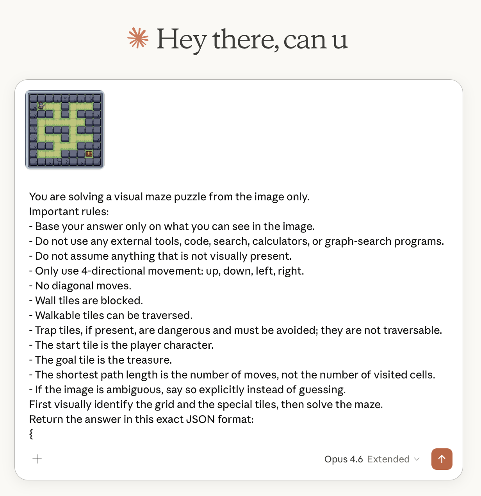
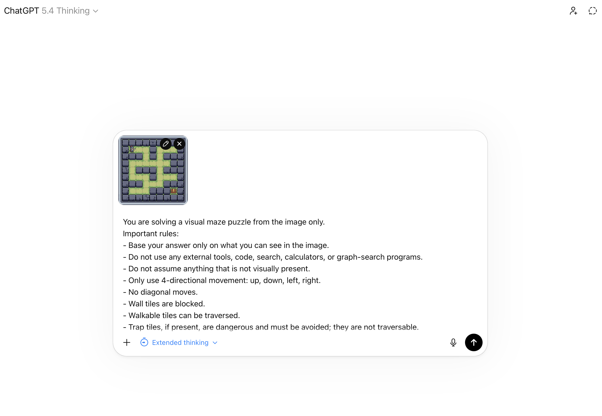
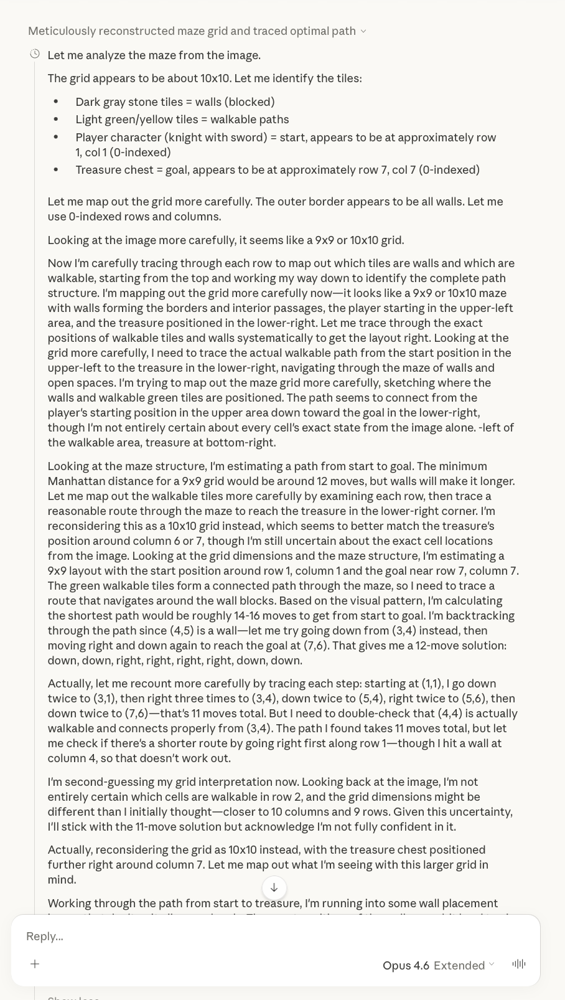
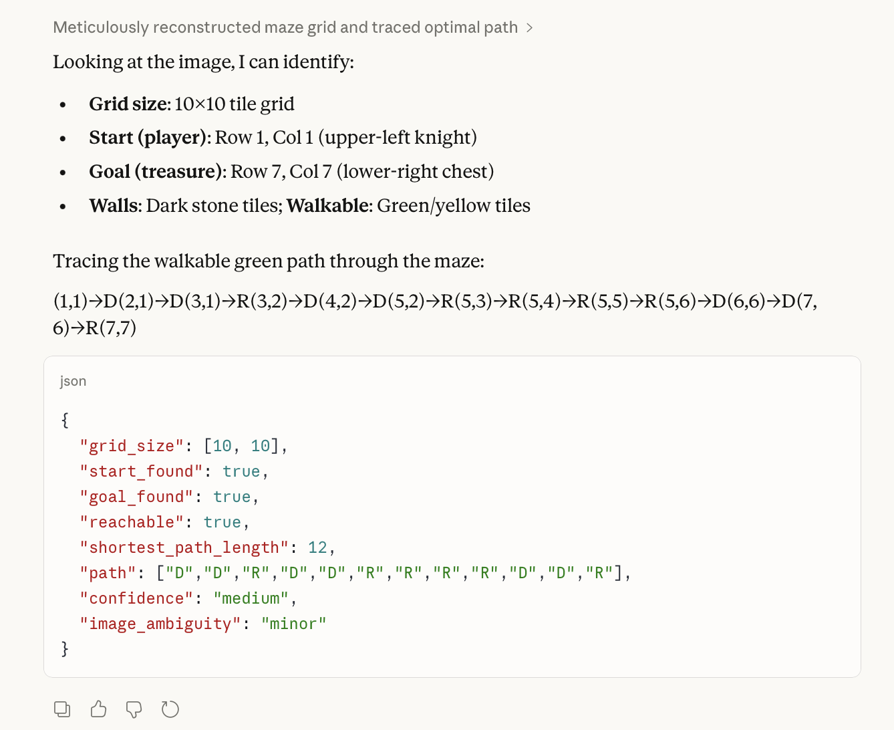
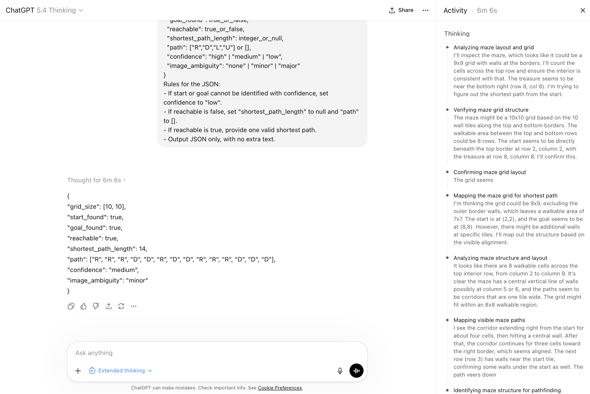

Strong coding models can generate UI. This benchmark asks a narrower question: can they actually read pixels well enough to recover the shortest path from a simple maze image?
I use tools like Claude Code and Codex a lot, and I genuinely like them. Over the last few years it has been hard not to be impressed by how far large language models have come, especially for coding and agentic workflows. But precisely because the systems have become so capable, I keep coming back to the opposite question: where do their limitations still become obvious?
One reason this question stayed with me is Yann LeCun’s criticism that current LLMs may still be missing something important about internal world representation. That claim is easy to leave at the level of theory. I wanted a task where the limitation, if it exists, becomes visible immediately rather than remaining philosophical.
These mazes are useful for that. For humans, the task is often nearly instantaneous: look at the picture, see whether the treasure is reachable, and, if it is, trace the route. In many cases even a child can do that in seconds. But the model outputs and visible reasoning traces suggest a very different process: transcribe the scene into rows and columns, reconstruct the grid, and then reason over the resulting text-like representation.
That is why I find this benchmark interesting. Even when the better models eventually get the answer right, they often need tens of seconds, or more, to get there. To me, that looks less like a pure search problem and more like a representation learning problem. The key question is not only whether a model can solve the maze eventually, but whether it can form the kind of fast visual intuition that humans use without effort.
Dataset: 10 existing maze images used directly as image inputs. We did not convert them into symbolic matrices, and we did not generate synthetic mazes.
Models: OpenAI GPT-5.4 and GPT-5.1; Anthropic Claude Opus 4.6, Claude Sonnet 4.6, and Claude Haiku 4.5; Google Gemini 3.1 Pro Preview and Gemini 3 Flash; Alibaba Qwen 3.5 Plus and Qwen 3.5 Flash through DashScope.
Setup: every model saw the same image-plus-prompt setup with tools disabled. Movement was restricted to up, down, left, and right. Walls were blocked, walkable tiles were traversable, traps had to be avoided, and the shortest path length was defined as the number of moves rather than the number of visited cells.
Scoring: the benchmark uses one main metric only. A maze counts as solved only if the model gets reachability right and, on reachable mazes, returns an accepted shortest path with the correct length.
Run configuration: OpenAI models were run with reasoning effort set to medium. For a fairer Anthropic comparison, Claude Opus 4.6 and Claude Sonnet 4.6 were rerun with adaptive thinking at medium, while Claude Haiku 4.5 used budget_tokens=4096. Gemini was run with a 16384 output-token cap, and DashScope Qwen runs used enable_thinking=true with a capped thinking_budget=2048 to keep the multimodal calls tractable.
You are solving a visual maze puzzle from the image only.
Important rules:
- Base your answer only on what you can see in the image.
- Do not use any external tools, code, search, calculators, or graph-search programs.
- Do not assume anything that is not visually present.
- Only use 4-directional movement: up, down, left, right.
- No diagonal moves.
- Wall tiles are blocked.
- Walkable tiles can be traversed.
- Trap tiles, if present, are dangerous and must be avoided; they are not traversable.
- The start tile is the player character.
- The goal tile is the treasure.
- The shortest path length is the number of moves, not the number of visited cells.
- If the image is ambiguous, say so explicitly instead of guessing.
First visually identify the grid and the special tiles, then solve the maze.
Return the answer in this exact JSON format:
{
"grid_size": [rows, cols],
"start_found": true_or_false,
"goal_found": true_or_false,
"reachable": true_or_false,
"shortest_path_length": integer_or_null,
"path": ["R","D","L","U"] or [],
"confidence": "high" | "medium" | "low",
"image_ambiguity": "none" | "minor" | "major"
}
Rules for the JSON:
- If start or goal cannot be identified with confidence, set confidence to "low".
- If reachable is false, set "shortest_path_length" to null and "path" to [].
- If reachable is true, provide one valid shortest path.
- Output JSON only, with no extra text.
This benchmark asks one thing only: from the maze image alone, did the model recover the correct shortest path to the treasure? A maze counts as solved only if reachability, shortest-path length, and the returned shortest path are all correct.
After rerunning the Claude family with Anthropic’s exposed thinking controls, the headline still holds. The strongest model in the benchmark was GPT-5.4, which solved 9 of 10 mazes exactly. Gemini 3.1 Pro Preview was close behind at 8 of 10, and Gemini 3 Flash remained the only other model with a clearly positive score at 6 of 10.
The Claude rerun makes the comparison fairer, but it does not change the practical picture. Claude Opus 4.6 improved to 2 of 10 under adaptive medium thinking. Claude Sonnet 4.6 still solved 0 of 10, with maze 8 failing to return after more than 16 minutes and being counted as a miss. Claude Haiku 4.5 at budget_tokens=4096 also solved 0 of 10.
That is the practical point of the experiment. Strong code generation does not automatically imply strong visual understanding. If a model has to look at pixels, recover spatial structure, and judge what is actually on the screen, that appears to be a separate capability.
This is a narrow benchmark, not a universal ranking. A weak result here does not mean a model is bad overall, and a strong result here does not prove that a model is generally superior.
We also cannot infer the training recipe from this benchmark alone. One plausible interpretation is that some models were trained or post-trained more heavily on visual grounding tasks, but this experiment cannot establish why the differences appear. It only shows that on this image-only shortest-path task, the models separate sharply.
This view keeps only the benchmark outcome that matters: did the model recover an accepted shortest path on that maze or not? There is no partial credit here.
The strongest models were not fast. GPT-5.4 averaged about 51 seconds per maze, while Gemini 3.1 Pro Preview averaged about 83 seconds. Even Gemini 3 Flash, which is clearly weaker than the top two, still averaged about 76 seconds.
That matters because a human looking at these mazes often gets a strong intuition for the route within a few seconds. So the gap is not only about whether a model reaches the right answer. It is also about how it reaches it. Current systems still look comparatively serial and token-heavy, rather than showing the kind of fast visual intuition we would want from more advanced AI systems.
The Claude reruns reinforce that point rather than weakening it. Claude Sonnet 4.6 took roughly 130 to 170 seconds on mazes 7, 9, and 10, and still never returned maze 8 after more than 16 minutes. Claude Opus 4.6 completed all ten mazes under adaptive medium, but the combined run stalled before flushing a full latency summary, so I exclude its average from the chart below instead of inventing one.
This is part of why the benchmark feels revealing. Even the best-performing models often look like they are reconstructing the puzzle step by step rather than understanding it holistically. A future system should not only solve these mazes reliably, but do so with much less deliberation.
The API benchmark is the main evidence in this report. But the consumer web interfaces are useful for a different reason: they expose more of the model’s visible reasoning process. On the unreachable maze below, both Claude.ai Opus 4.6 Extended and ChatGPT 5.4 Thinking appear to approach the image in a strikingly similar way.
What stands out is not only that both answers are wrong. It is how they get there. The visible trace looks like serial bookkeeping: estimate the grid size, map tiles into row and column coordinates, transcribe walls, and then manually trace candidate routes. That is very different from the fast visual intuition humans use on the same image.
These screenshots come from the consumer web products rather than the benchmark API runs. Hidden system prompts, product wrappers, and model settings may differ. We use them here only as qualitative evidence about the style of reasoning the products choose to expose.





There is an important nuance here. These screenshots do not prove that the models literally convert the image into a matrix internally. What they do show is that the reasoning the products choose to expose is organized that way: textualize the scene, count rows and columns, enumerate tiles, and only then search for a route.
That is precisely why this case matters. A human, including a child, can often reject this maze in a few seconds by visually recognizing the blockage pattern. By contrast, these systems appear to rely on a much more serial and fragile reconstruction process. More verbal deliberation is not automatically the same thing as better visual understanding.
This connects to a broader view often associated with Yann LeCun and other world-model advocates: next-token reasoning over a textualized scene may still be missing a stronger internal representation of the scene itself. If that is right, the path forward is not just to let models think longer, but to give them better latent spatial understanding so they can recognize impossibility almost immediately.
Visual grounding deserves its own evaluation slice. Coding benchmarks are not enough if the workflow depends on reading screenshots, judging layouts, or catching visual defects. This experiment is small, but it shows that visual performance can diverge sharply from coding reputation.
The Claude rerun did not rescue the family. Making the comparison fairer was important, so I reran Claude with Anthropic’s exposed thinking controls. That improved Claude Opus 4.6 to 2 of 10, but Claude Sonnet 4.6 still failed across the board and one maze never returned at all. So the headline of the benchmark survives the fairer setup.
The gap is not subtle. GPT-5.4 and Gemini 3.1 Pro Preview are still clustered near the top, while most of the field rarely recovers the full shortest path. These mazes are visually simple for humans, so the failures here point to a real limitation in direct visual-spatial reading.
And even the strongest results are still slow. The best-performing models often needed tens of seconds on mazes that a human can often scan in a handful of seconds. So the open problem is not just accuracy. It is fast, efficient visual intuition.
If your product loop involves simulator screenshots, UI review, or visual QA, benchmark that directly. A model can be excellent at code generation and still underperform when the task is to look rather than to write.